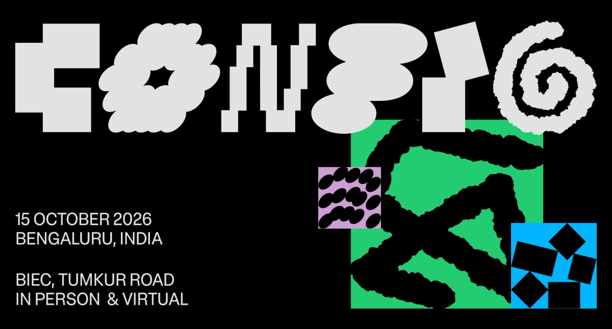
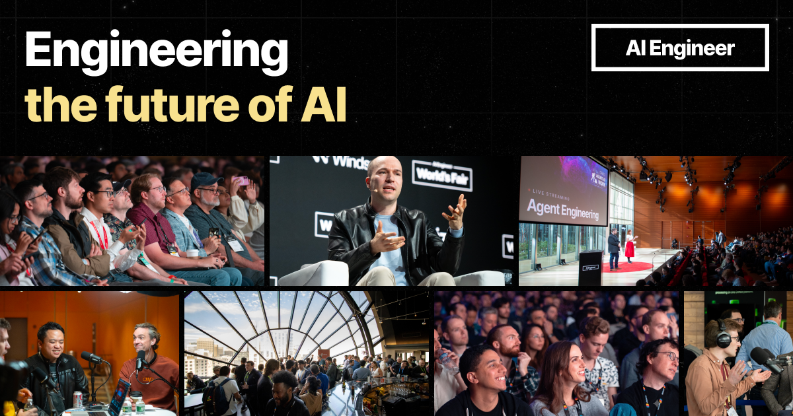
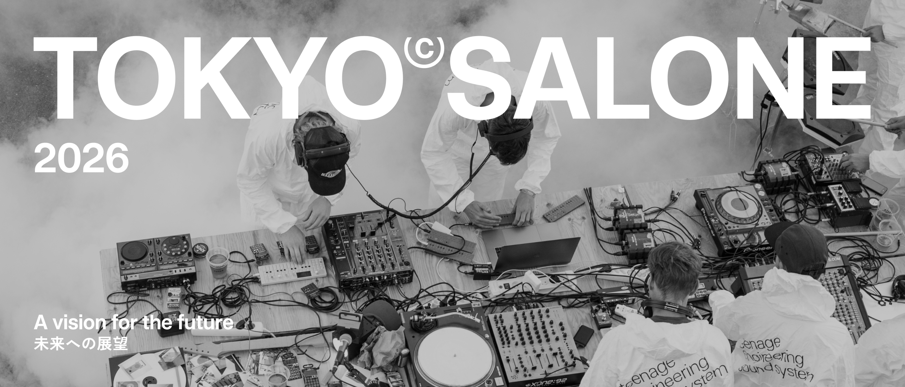
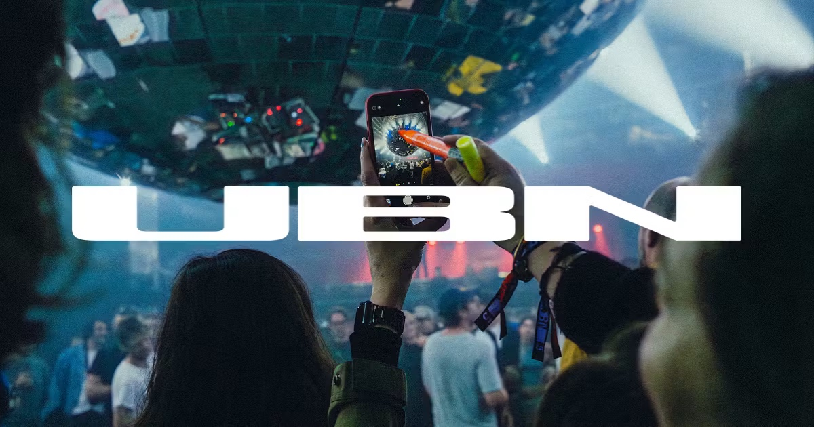
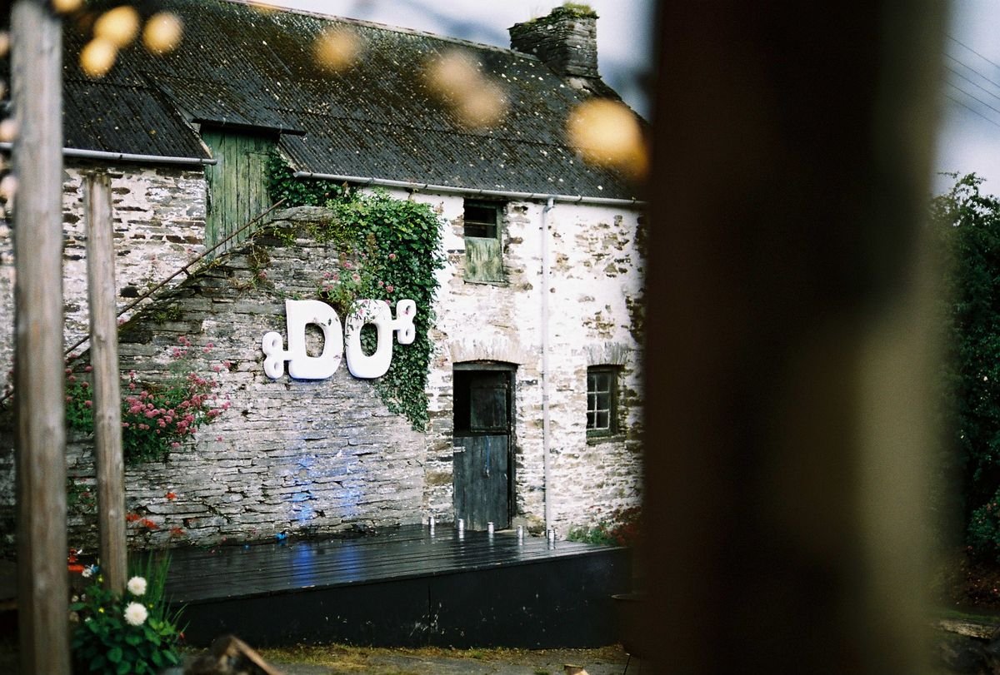
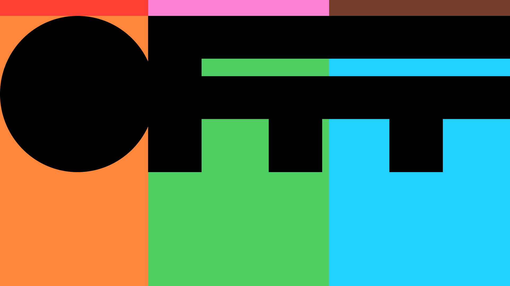

שש דוגמאות מהעולם, מחולקות לשלושה מחנות, ומה שנגזר מהן להחלטה הראשונה שצריך לקבל: האם התדמית של INTENT מזכירה AI בכלל.
״AI מול אדם״ היא הכותרת, לא הנקודה. הנקודה החדה יותר היא סדר הזמנים: AI מייצר פלט, הוא לא מייצר את הסיבה. כוונה היא תמיד הדבר שקודם — הרגע שבו מישהו מחליט למה בכלל. זה בדיוק מה שכתוב בטקסט על השם: כוונה היא ה״למה״ שאדם מביא איתו לתהליך יצירה.
המשמעות למשימה: התדמית לא צריכה להראות עימות בין מכונה לאדם. היא צריכה להחזיק את הרגע שלפני.
כל כנס בעולם שנוגע ב־AI נראה היום אותו דבר: גליץ׳, צורות ״גנרטיביות״, גרדיאנטים מטושטשים, וג׳סטה ״אנושית״ מרוחה מעל גרוטסק מכונה. הקהל של INTENT — קריאייטיב, פרסום, הייטק — ראה את זה מאה פעם. זו כבר לא בחירה עיצובית, זו ברירת מחדל.
כנס שכל התזה שלו היא ״לצאת מהמסכים״, ומתמתג באסתטיקה של מסך, סותר את עצמו לפני שהתחיל. הפער בין המחנות בהמשך המסמך הוא לא פער של טעם — הוא פער של אמינות.
ההחלטה הראשונה היא לא צבע ולא פונט.
היא: האם התדמית של INTENT מזכירה AI בכלל?

שחור, ירוק חומצי, ולוגוטייפ שכל אות בו עברה עיוות אחר — פיקסלים, בלובים, ספירלה. סביבו טקסטורות ״לו־פיי״: קווים משורבטים, גרדיאנטים מטושטשים, חלקיקים אליפטיים.
כי Figma פרסמו את הרציונל. הם רצו להראות יכולת AI מתוחכמת ״תוך שמירה על נקודת מבט אנושית״ — ואז, כדי לייצר את המראה הידני, בנו כלים ייעודיים ב־Figma Make. המנהלת האמנותית מנסחת זאת כרצון “to appreciate touches of imperfection”.
כלומר: השתמשו ב־AI כדי לייצר את חוסר־המושלמות. הביצוע מצוין והמערכת עשירה — אבל הלוגיקה הפוכה בדיוק למה ש־INTENT טוען. אצל Figma זה עקבי, כי המוצר שלהם הוא הכלי. אצל כנס שקורא ״לצאת מהמסכים״, אותו מהלך הופך לסתירה.
המהלך של ״לזייף חוסר־מושלמות באמצעות מכונה״ הוא בדיוק מה שאסור ל־INTENT לעשות. אם רוצים ג׳סטה אנושית — שתהיה אנושית באמת.

רקע כמעט־שחור עם ״כוכבים״, טיפוגרפיה מונו בממשק, סמן טרמינל >_ בתוך שדה האימייל, ומסגרות ניאון צבעוניות סביב כרטיסי האירועים. הצילום עצמו דוקומנטרי ואמיתי — אבל הוא מוגש בתוך מעטפת שנראית כמו IDE.
הקהל הוא מהנדסים, והשפה היא השפה שלהם. זו לא התחכמות — זו התאמה מדויקת לקהל. הבעיה מתחילה כשמעתיקים את הקוד הזה לקהל אחר לגמרי, ואז הוא מאבד את ההצדקה והופך לתחפושת.
שימי לב שגם כאן, הרגע היחיד שבו האירוע נראה מזמין הוא הצילומים של אנשים אמיתיים באולם. כל השאר הוא מסגרת. זה רמז חזק לאן INTENT צריך לשים את המשקל.
שפת ״טרמינל וניאון״ היא ברירת מחדל, לא בחירה. לקהל של INTENT — קריאייטיב, פרסום, תרבות — היא לא שפת אם, ותיקרא כחיקוי.

אין אפקטים. אין צורות. יש גרוטסק נייטרלי בלבן, ותצלום מלמעלה של שולחן עמוס ציוד, כבלים, ידיים, עשן. הכותרת “A vision for the future” מונחת על סצנה פיזית לחלוטין.
הכנס מדבר על עתיד — ומראה הווה. המסר הסמוי הוא שהעתיד נעשה בידיים, בחדר, עם אנשים. הטיפוגרפיה לא מנסה להיות מעניינת; היא נותנת לצילום לשאת את כל האנרגיה. זו משמעת, לא עוני.
מכל שש הדוגמאות, זו הקרובה ביותר לרוח של INTENT: עכשווי ומתוחכם בלי שום רמז לאסתטיקה גנרטיבית. הכל עומד על שני דברים — טיפוגרפיה חזקה וצילום אמיתי.
אפשר להיראות עכשווי לגמרי בלי אפקט אחד. אבל זה עובד רק אם יש צילום מקורי חזק. בלי צילום, הגישה הזו קורסת לגנריות.

צילום פריים־מלא של קהל בתוך החלל — ידיים, טלפון מורם, תאורה, אנשים. מעליו לוגוטייפ לבן כבד מאוד שחוצה את כל הרוחב כמו פס. באתר עצמו, הכיסוי הוא עין אנושית בקלוז־אפ קיצוני.
התדמית מוכרת תחושה של להיות שם, לא רשימת דוברים. הטיפוגרפיה משמשת כמסגרת ארכיטקטונית ולא כתוכן. השילוב של גוף אנושי בקנה מידה גדול עם טיפוגרפיה תעשייתית יוצר מתח שנשאר בזיכרון.
רלוונטי במיוחד ל־INTENT בגלל המשפט ״לפתוח את הראש · להרחיב את הלב״ — זה הרגיסטר הרגשי, החם והגופני. Us By Night מוכיח שאפשר להחזיק אותו בלי ליפול לרכות או לחמימות גנרית.
קנה מידה הוא כלי רגשי. גוף אנושי גדול מאוד ועל־ידו טיפוגרפיה קשוחה — זה המתח שהשם INTENT כבר מכיל.

הלוגו אינו קובץ — הוא אובייקט תלת־ממדי לבן מותקן על קיר אבן של אסם, מטפס בקיסוס, מצולם דרך עלים מטושטשים בחזית. פלטה של ירוק, אבן ואור יום. אין ולו רמז דיגיטלי אחד.
הכותרת הנוכחית שלהם באתר היא ״בנה את סוכן ה־AI הראשון שלך״ — כלומר התוכן עוסק ב־AI במלואו. והתדמית לא רומזת על זה במילימטר. זו בדיוק ההפרדה שאני מציע: התוכן מדבר על AI, התדמית היא ההוכחה הנגדית.
הסיכון בגישה הזו הוא גלישה לנוסטלגיה ולרכות. ל־INTENT, שיושב בתל אביב ופונה לקהל אורבני וחד, צריך את העיקרון בלי הפסטורליות — כלומר: מוחשיות וחומריות, לא כפריות.
לוגו שמיוצר כאובייקט פיזי ואז מצולם — במקום להיות מורכב בקובץ — הוא המהלך הזול והחזק ביותר להוכיח שהכנס אמיתי.

ארבע האותיות תופסות את כל המסך והופכות למערכת שמחלקת את השטח לשדות צבע — כתום, ירוק, תכלת, ורוד, אדום. באתר החי, אותן אותיות משמשות כמסכה שדרכה רץ וידאו.
זו שפה של פסטיבל, לא של כנס. היא מוכרת אנרגיה, ריבוי וגירוי — בדיוק ההפך מ״לעצור, להעמיק״ שמופיע בבריף של INTENT. הרעש הוא המסר, וזה מסר אחר.
עדיין שווה ללמוד ממנה דבר אחד: השימוש בשם עצמו כמערכת פריסה, ולא רק כלוגו שמונח בפינה. ל־INTENT יש שם ארוך יותר ופחות גיאומטרי, אבל העיקרון — שהמילה היא הפריסה — רלוונטי מאוד.
שהשם יהיה מערכת פריסה, לא תו תקן בפינה. אבל את הרעש והריבוי — לא לקחת.
שש הדוגמאות מסתדרות על ציר אחד: כמה התדמית מנסה להיראות כמו הטכנולוגיה שהיא מדברת עליה. ככל שהיא מנסה פחות, כך היא נקראת אמינה יותר.
Semi Permanent ו־Us By Night מוכיחים שאפשר להיראות עכשווי ומתוחכם לחלוטין בלי שום רמז לאסתטיקה גנרטיבית — על טיפוגרפיה חזקה, צילום אמיתי של בני אדם, ומשמעת. DO Lectures מוסיף את המהלך הכי ישים: לייצר את הזהות כאובייקט פיזי ולצלם אותה, במקום להרכיב אותה בקובץ.
בשביל INTENT זה מתרגם לכלל עבודה אחד: כל נכס חזותי צריך להיות משהו שקרה במציאות ולא משהו שנוצר במחולל. זו גם ההוכחה לתזה של הכנס וגם ההגנה הכי טובה מפני היראות כמו כל כנס AI אחר.
אם הכנס טוען שמפגש פיזי מייצר משהו שמכונה לא יכולה —
התדמית צריכה להיות הראיה הראשונה לכך.
יש תקציב וגישה לצילום מקורי?
זו שאלת המפתח. שני המחנות נבדלים בעיקר בזה. מחנה 2 עומד או נופל על צילום — ובלי צילום, מחנה 1 הוא הפיתוי הקל, כי הוא לא דורש כלום חוץ ממחולל.
איזה משני הטונים שבבריף מנצח?
בטקסטים יש שני INTENT שונים: אחד שקט ומעמיק (״לעצור, להעמיק, להסתכל קדימה״) ואחד חם וסקרן (״לפתוח את הראש, להרחיב את הלב״). זה לא אותו מיתוג, וצריך להכריע.
מה כבר סגור, ומה היחס לשותפים?
יש כבר לוגו — באנגלית בלבד או גם בעברית? והאם התדמית צריכה לחיות לצד OPEN, פורטפוליו וטאבטאבטאב, או לעמוד עצמאית לגמרי?